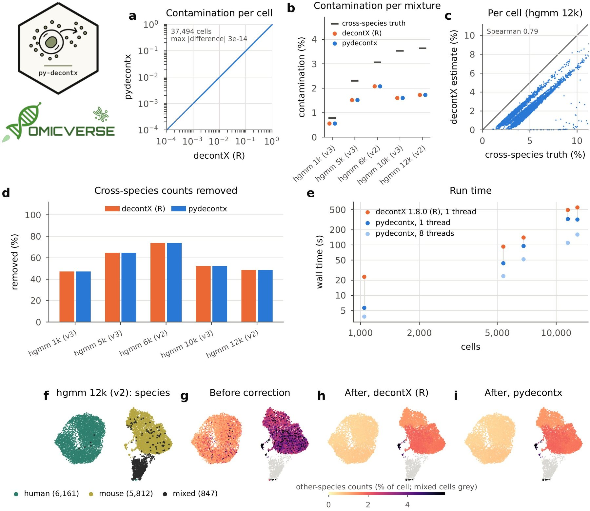

pydecontx: a Python implementation of decontX for ambient RNA removal in single-cell RNA-seq data
Affiliations
- 1 Department of Genetics, Stanford University, Stanford, CA 94305, USA
- 2 OmicVerse, Inc., San Francisco, CA 94114, USA
- 3 Hubei Key Laboratory of Agricultural Bioinformatics, College of Informatics, Huazhong Agricultural University, Wuhan 430070, China
OmicVerse Technical Reports (2026)Cite this article
Download PDFAbstract
We present pydecontx, a Python implementation of decontX, which estimates and removes ambient RNA contamination in each cell of a droplet-based single-cell RNA-seq experiment with a Bayesian mixture model fitted by variational inference. pydecontx follows decontX's code paths, including the random initialisation, which it draws with ports of R's random number generator and beta sampler, so that the same seed gives the same result as in R; its updates are vectorised and can use several threads. On five human–mouse mixtures from 10x Genomics (37,494 cells), in which counts from the other species reveal each cell's ambient RNA, pydecontx ran the same number of iterations as decontX 1.8.0 in every mixture, and its per-cell contamination estimates differed from decontX's by at most 3 × 10⁻¹⁴ and its decontaminated counts by at most 4 × 10⁻¹¹. It ran 1.5–4.1 times faster than decontX on one thread and 2.7–6.1 times faster with eight threads. pydecontx is used by OmicVerse for ambient RNA removal and is released at https://github.com/omicverse/py-decontx and on PyPI.
- decontX
- ambient RNA
- contamination
- single-cell RNA-seq
- quality control
- Python
- reproducibility
Introduction
Droplet-based single-cell RNA sequencing captures, together with each cell, cell-free RNA from the suspension. These ambient transcripts add counts of genes a cell does not express, blur cell-type markers and can mislead clustering and differential expression, so the removal of ambient RNA is a routine quality-control step1,2. decontX3 models the counts of each cell as a mixture of the cell's own expression and contamination from the other cell populations of the experiment, and estimates the contamination fraction of every cell, together with a decontaminated count matrix, by variational inference. Other methods estimate the contamination from empty droplets, such as SoupX4 and CellBender5.
Single-cell analysis is increasingly done in Python. Workflows are built on scanpy and the scverse ecosystem6,7, and OmicVerse8 brings bulk, single-cell and spatial analyses together in one Python framework. decontX, however, is available only in R, as a Bioconductor package.
Python users currently reach decontX through rpy29. This requires a parallel R and Bioconductor installation, converts the count matrix between the two languages and exposes decontX's options only through the binding layer. A native implementation removes all three costs, as PyDESeq210 has shown for DESeq211 and pyedger12 for edgeR13. We set the same target for pydecontx: a decontamination in Python should return the same contamination fractions and counts as the same decontamination in R.
Here we present pydecontx, a Python implementation of decontX that is versioned against a specific decontX release. We describe its implementation and compare it with decontX 1.8.0 on five human–mouse mixtures from 10x Genomics, in which the ambient RNA of every cell can be measured directly.
Implementation
Method
decontX takes the counts of the cells and a clustering of them into broad cell populations3. The counts of cell $j$ in population $k$ are modelled as a mixture: a proportion $\theta_j$ comes from the native expression profile $\phi_k$ of population $k$, and the rest from a contamination profile $\eta_k$ formed by the expression of the other populations. The proportions $\theta_j$ have a beta prior whose parameters are estimated from the data by Dirichlet maximum likelihood14. Starting from random proportions drawn from that prior, decontX alternates updates of each transcript's probability of being native, of $\phi$ and $\eta$, and of $\theta$ and the prior, until no proportion changes by more than 0.001. The contamination fraction of a cell is the share of its counts assigned to contamination, and the decontaminated matrix keeps the expected native counts. When the raw matrix of empty droplets is given, their expression profile replaces the estimated contamination profile.
Features and code structure
pydecontx 0.1.1 implements decontX from decontX 1.8.0 (Table 1): the variational inference with estimation of the prior, batches processed separately, contamination profiles from empty droplets, and the decontaminated count matrix. decontx takes a genes × cells matrix, as decontX, or an AnnData object15, whose cell table and layers receive the contamination fractions and the decontaminated counts. pydecontx builds on NumPy16, SciPy17 and pandas18; it runs on one thread by default and on several with n_jobs, which does not change the result.
| decontX 1.8.0 | pydecontx | Agreement on the benchmark data |
|---|---|---|
| set.seed, rbeta | rrng.RRandom.rbeta | same random draws |
| decontX (iterations) | decontx | same number in all five mixtures |
| decontX (contamination) | decontx | absolute difference at most $3 \times 10^{-14}$ |
| decontX (decontaminated counts) | decontx | absolute difference at most $4 \times 10^{-11}$ |
| MCMCprecision fit_dirichlet | fit_dirichlet | prior parameters, relative difference at most $4 \times 10^{-13}$ |
Numerical parity with decontX
pydecontx ports the code that decontX runs. decontX draws the initial proportions with R's rbeta within a fixed seed; pydecontx draws them from a port of R's Mersenne-Twister generator19 and of R's beta sampler, Cheng's algorithms BB and BC20, so the same seed gives the same starting point. The updates follow decontX's C++ loops, and the Dirichlet fixed-point iteration follows MCMCprecision14. The updates of all transcripts are computed at once, in blocks that fit the processor cache, from a ratio for each gene and population and one for each cell; this changes the arithmetic of the C++ loops only by rounding. The steps are tested against decontX 1.8.0 (23 tests, of which 5 run R and 2 use stored R values). pydecontx versions follow decontX releases (0.1.x tracks decontX 1.8.0).
Use in OmicVerse
pydecontx is the decontX backend of ambient-RNA removal in OmicVerse8: the function ov.pp.ambient.remove_ambient with method='decontx' runs it on a filtered AnnData with cluster labels (cluster_key=), once per sample when batch_key is given. It replaces the counts with the decontaminated counts, keeps the original counts in a layer and records each cell's contamination fraction in adata.obs.
Comparison with decontX on human–mouse mixtures
Data and design
We used the five mixtures of human and mouse cells from 10x Genomics21 of the pysoupx report22: hgmm 1k, 5k and 10k with v3 chemistry, and 6k and 12k with v2. Each comes with Cell Ranger's cells (1,046 to 12,820 per mixture, 37,494 in total), and one clustering of them was given to both packages. In a human cell, counts of mouse genes can only come from ambient RNA, and the reverse holds for mouse cells; relative to the share of the other species in the RNA of empty droplets, they give each cell's ground-truth contamination fraction (Supplementary methods). Both packages ran decontX with its defaults and the clusters. We compared the iterations, the contamination fractions and decontaminated counts, the agreement of both with the ground truth, and run time.
Contamination fractions and decontaminated counts
pydecontx ran the same number of iterations as decontX in every mixture, from 37 to 316 (Table 1). The per-cell contamination fractions of the two packages differed by at most $3 \times 10^{-14}$ (Fig. 1a), the decontaminated counts by at most $4 \times 10^{-11}$ and the prior parameters by at most $4 \times 10^{-13}$ in relative terms. In the embedding of hgmm 12k, the corrected share of other-species counts was the same in every cell (Fig. 1f–i).
Both packages therefore relate to the ground truth in the same way. Averaged over the human and mouse cells of each mixture, the estimated contamination ranged from 0.6 to 2.1% against a ground truth of 0.8 to 3.6%, below the ground truth in every mixture (Fig. 1b). The correction removed 47 to 74% of the cross-species counts and kept 99.0 to 99.6% of the counts from the cell's own species (Fig. 1d). Across cells, the estimates followed the ground truth, with Spearman correlations of 0.62 to 0.85 between a cell's estimated and true contamination (0.79 in hgmm 12k, Fig. 1c).

decontX on one thread (R and Python) and with eight threads (Python), the faster of two runs, against the number of cells. (f–i) UMAP23 of the 12,820 cells of hgmm 12k, computed with scanpy from the counts: (f) species of each cell; (g–i) share of a cell's counts from the other species before correction and after correction by decontX and by pydecontx (mixed cells grey).Speed
pydecontx ran 1.5 to 4.1 times faster than decontX on one thread (median 1.7) and 2.7 to 6.1 times faster with eight threads (Fig. 1e). For hgmm 12k, the largest mixture (12,820 cells), decontX took 553 s, and pydecontx 319 s on one thread and 161 s on eight.
Conclusion and future perspectives
pydecontx brings decontX to Python with the same results as R. On five human–mouse mixtures it runs the same iterations as decontX 1.8.0 and returns the same contamination fractions and decontaminated counts to rounding, from the same seed, and runs faster on one thread and faster still on several. Because pydecontx works with AnnData objects and is part of OmicVerse, ambient RNA can be removed in the same Python session as the rest of a single-cell workflow.
Future work includes the estimation of cell populations that decontX performs when no clustering is given, which embeds the cells with UMAP and clusters them with DBSCAN, decontX's diagnostic plots, and decontPro for protein counts. pydecontx will continue to follow decontX releases, with each version pinned to the release it reproduces.
Data and code availability
pydecontx is released under the Apache License 2.0 on PyPI (pip install pydecontx) and at https://github.com/omicverse/py-decontx; this report describes version 0.1.1. The benchmark (report/scripts in the repository) reproduces every number and figure in this report. The raw and filtered matrices of the 10x Genomics datasets hgmm_1k_v3, hgmm_5k_v3, hgmm_10k_v3, hgmm_6k and hgmm_12k were obtained from https://www.10xgenomics.com/datasets, accessed on 11 November 2026. Software: pydecontx 0.1.1 (Python 3.10, NumPy 2.2.6, SciPy 1.15.2; scanpy 1.11.5 for the clustering and Fig. 1f–i); decontX 1.8.0 with MCMCprecision 0.4.2 on R 4.5.3 (bioconda). Hardware: one node of the Stanford Sherlock cluster (AMD EPYC 9754).
Declaration of generative AI and AI-assisted technologies
The authors used Claude Opus 5.5, GPT-6 Astra, and OmicOS to proofread grammar and syntax, improve readability. Any AI-assisted edits were reviewed by the authors, who take full responsibility for the content of this publication.
Conflicts of interest
Contributors Zehua Zeng and Xu Meng are affiliated with OmicVerse, Inc.
References
- 1.Heumos L, Schaar AC, Lance C, et al. (2023). Best practices for single-cell analysis across modalities. Nature Reviews Genetics 24, 550-572. 10.1038/s41576-023-00586-w
- 2.Janssen P, Kliesmete Z, Vieth B, et al. (2023). The effect of background noise and its removal on the analysis of single-cell expression data. Genome Biology 24, 140. 10.1186/s13059-023-02978-x
- 3.Yang S, Corbett SE, Koga Y, et al. (2020). Decontamination of ambient RNA in single-cell RNA-seq with DecontX. Genome Biology 21, 57. 10.1186/s13059-020-1950-6
- 4.Young MD, Behjati S (2020). SoupX removes ambient RNA contamination from droplet-based single-cell RNA sequencing data. GigaScience 9, giaa151. 10.1093/gigascience/giaa151
- 5.Fleming SJ, Chaffin MD, Arduini A, et al. (2023). Unsupervised removal of systematic background noise from droplet-based single-cell experiments using CellBender. Nature Methods 20, 1323-1335. 10.1038/s41592-023-01943-7
- 6.Wolf FA, Angerer P, Theis FJ (2018). SCANPY: large-scale single-cell gene expression data analysis. Genome Biology 19, 15. 10.1186/s13059-017-1382-0
- 7.Virshup I, Bredikhin D, Heumos L, et al. (2023). The scverse project provides a computational ecosystem for single-cell omics data analysis. Nature Biotechnology 41, 604-606. 10.1038/s41587-023-01733-8
- 8.Zeng Z, Ma Y, Hu L, et al. (2024). OmicVerse: a framework for bridging and deepening insights across bulk and single-cell sequencing. Nature Communications 15, 5983. 10.1038/s41467-024-50194-3
- 9.Gautier L. rpy2: Python interface to the R language. https://rpy2.github.io
- 10.Muzellec B, Teleńczuk M, Cabeli V, Andreux M (2023). PyDESeq2: a python package for bulk RNA-seq differential expression analysis. Bioinformatics 39, btad547. 10.1093/bioinformatics/btad547
- 11.Love MI, Huber W, Anders S (2014). Moderated estimation of fold change and dispersion for RNA-seq data with DESeq2. Genome Biology 15, 550. 10.1186/s13059-014-0550-8
- 12.Zeng Z, Meng X (2026). pyedger: a Python implementation of edgeR for differential expression analysis. Preprints.org. 10.20944/preprints202611.1133.v1
- 13.Robinson MD, McCarthy DJ, Smyth GK (2010). edgeR: a Bioconductor package for differential expression analysis of digital gene expression data. Bioinformatics 26, 139-140. 10.1093/bioinformatics/btp616
- 14.Heck DW, Overstall AM, Gronau QF, Wagenmakers E-J (2019). Quantifying uncertainty in transdimensional Markov chain Monte Carlo using discrete Markov models. Statistics and Computing 29, 631-643. 10.1007/s11222-018-9828-0
- 15.Virshup I, Rybakov S, Theis FJ, Angerer P, Wolf FA (2024). anndata: access and store annotated data matrices. Journal of Open Source Software 9, 4371. 10.21105/joss.04371
- 16.Harris CR, Millman KJ, van der Walt SJ, et al. (2020). Array programming with NumPy. Nature 585, 357-362. 10.1038/s41586-020-2649-2
- 17.Virtanen P, Gommers R, Oliphant TE, et al. (2020). SciPy 1.0: fundamental algorithms for scientific computing in Python. Nature Methods 17, 261-272. 10.1038/s41592-019-0686-2
- 18.McKinney W (2010). Data structures for statistical computing in Python. Proceedings of the 9th Python in Science Conference, 56-61. 10.25080/Majora-92bf1922-00a
- 19.Matsumoto M, Nishimura T (1998). Mersenne twister: a 623-dimensionally equidistributed uniform pseudo-random number generator. ACM Transactions on Modeling and Computer Simulation 8, 3-30. 10.1145/272991.272995
- 20.Cheng RCH (1978). Generating beta variates with nonintegral shape parameters. Communications of the ACM 21, 317-322. 10.1145/359460.359482
- 21.Zheng GXY, Terry JM, Belgrader P, et al. (2017). Massively parallel digital transcriptional profiling of single cells. Nature Communications 8, 14049. 10.1038/ncomms14049
- 22.OmicVerse Team (2026). pysoupx: a Python implementation of SoupX for ambient RNA removal in single-cell RNA-seq data. OmicVerse Technical Reports. https://omicverse.org/articles/pysoupx.html
- 23.Becht E, McInnes L, Healy J, et al. (2019). Dimensionality reduction for visualizing single-cell data using UMAP. Nature Biotechnology 37, 38-44. 10.1038/nbt.4314
Supplementary information
Supplementary methods
Data. The tasks are those of the pysoupx benchmark22: for each mixture, Cell Ranger's cells (for the v2 datasets, the union of the cells called with the human and the mouse reference), one Leiden clustering of them computed with scanpy (11 to 15 clusters), and species labels (human if at least 90% of a cell's counts come from human genes, mouse if at most 10% do, mixed otherwise). The same counts and clusters were given to both packages.
Runs. In R: decontX(counts, z = clusters) with default arguments (500 iterations at most, convergence 0.001, prior (10, 10) re-estimated, seed 12345). In Python: decontx(counts, z=clusters) with the same defaults, on one thread, and with n_jobs=8.
Ground truth. The ambient profile is the summed counts of droplets with 1 to 99 counts. For a human cell, the ground-truth contamination fraction is its mouse-gene counts divided by its total counts times the mouse share of the ambient profile, and the reverse for a mouse cell; per mixture, the ratio of the sums over all human and mouse cells. Ambient RNA from the cell's own species cannot be told apart from its own expression, so the share of cross-species counts removed and of own-species counts kept describe the correction.
Embedding (Fig. 1f–i). The cells of hgmm 12k were embedded with scanpy (counts normalised to 10,000 per cell and log-transformed, 2,000 variable genes, 30 principal components, 15 nearest neighbours) and UMAP; the embedding is for display only.
Run time. Run times are wall-clock times of the decontX call, without reading and writing files. One-thread runs were pinned to their own idle processor core with BLAS and OpenMP limited to one thread, R and Python alternating over 10 cores of one node; eight-thread runs used eight idle cores. Each configuration ran twice per mixture, and the faster run is reported. decontX computes a UMAP embedding of the cells in every run, also when clusters are given, and this is included in its time.
Notes for users coming from R
- Versions. pydecontx 0.1.x tracks decontX 1.8.0, including its defaults (500 iterations at most, convergence 0.001, prior (10, 10), seed 12345).
- Input.
decontx(counts, z=...)takes a genes × cells matrix, asdecontX(counts, z = ...); with an AnnData object (cells × genes),zandbatchcan name columns ofobs. - Clusters. pydecontx needs a clustering; decontX estimates one with UMAP and DBSCAN when none is given.
- Seeds and threads.
seed=sgives the same result asdecontX(..., seed = s);n_jobschanges only the run time.
Author information
Affiliations
- 1 Department of Genetics, Stanford University, Stanford, CA 94305, USA
- 2 OmicVerse, Inc., San Francisco, CA 94114, USA
- 3 Hubei Key Laboratory of Agricultural Bioinformatics, College of Informatics, Huazhong Agricultural University, Wuhan 430070, China
Correspondence
Correspondence to OmicVerse Team (contact@omicos.cn).
Contributors
OmicVerse Team members who contributed to this report: Zehua Zeng1,2, Xu Meng2,3.
Cite this article
OmicVerse Team. pydecontx: a Python implementation of decontX for ambient RNA removal in single-cell RNA-seq data. OmicVerse Technical Reports (2026). https://omicverse.org/articles/pydecontx
@techreport{omicverseteam2026pydecontx,
title = {pydecontx: a Python implementation of decontX for ambient RNA removal in single-cell RNA-seq data},
author = {{OmicVerse Team}},
institution = {OmicVerse},
type = {Technical Report},
year = {2026},
url = {https://omicverse.org/articles/pydecontx}
}